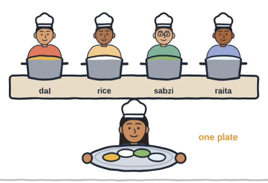
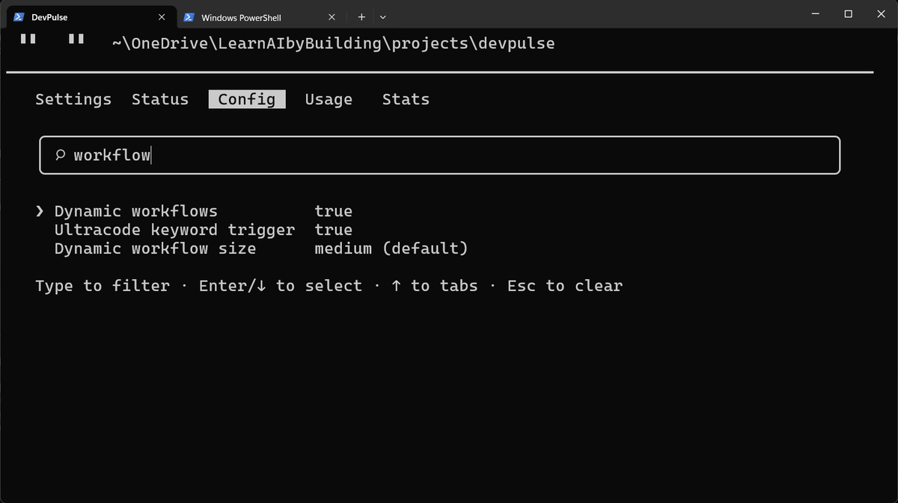
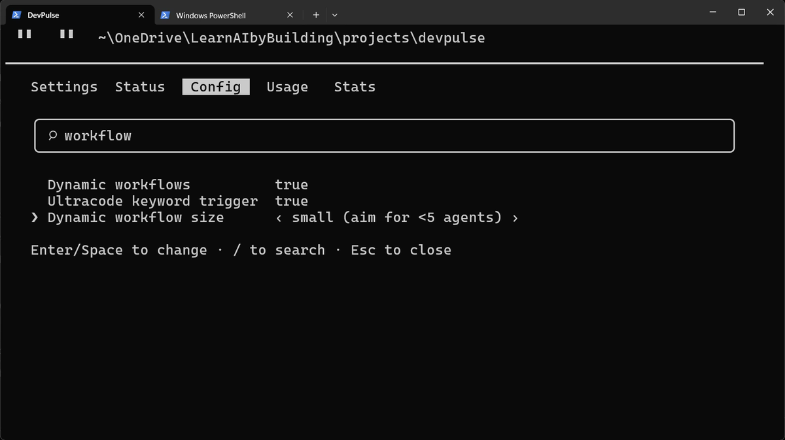
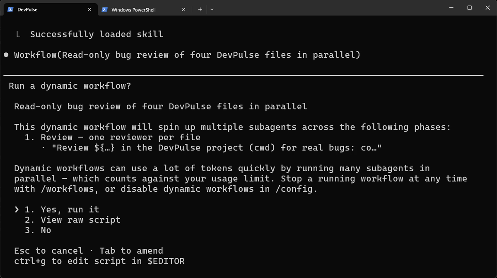
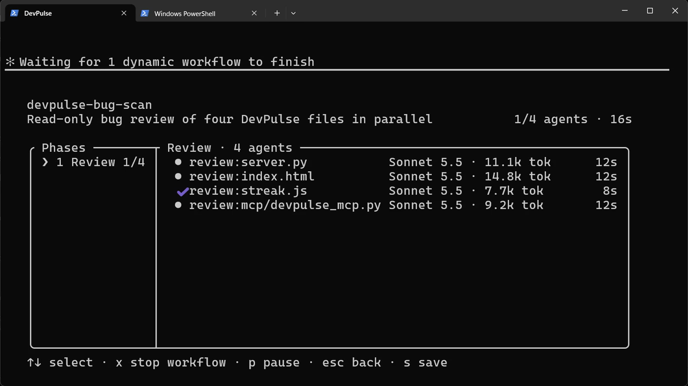
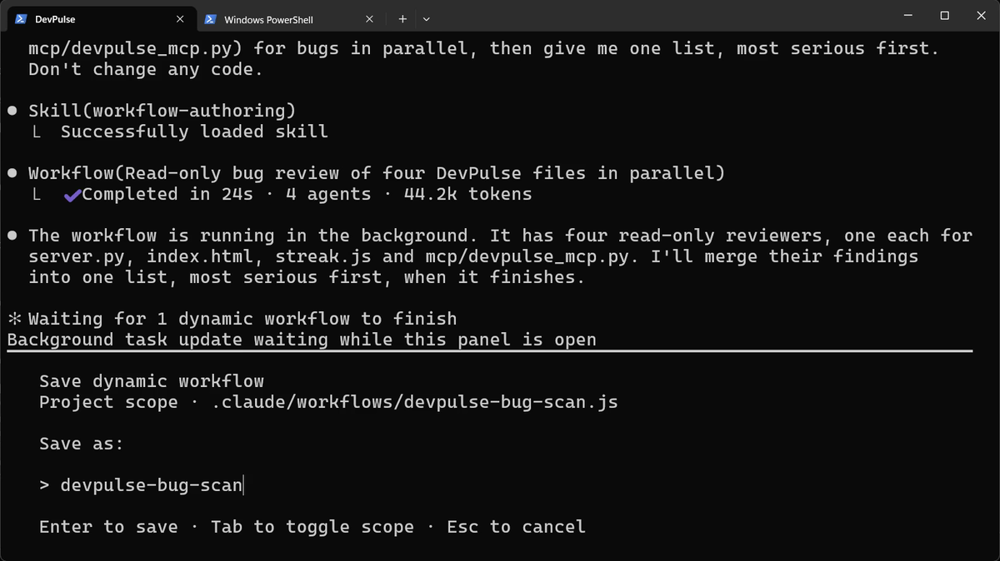
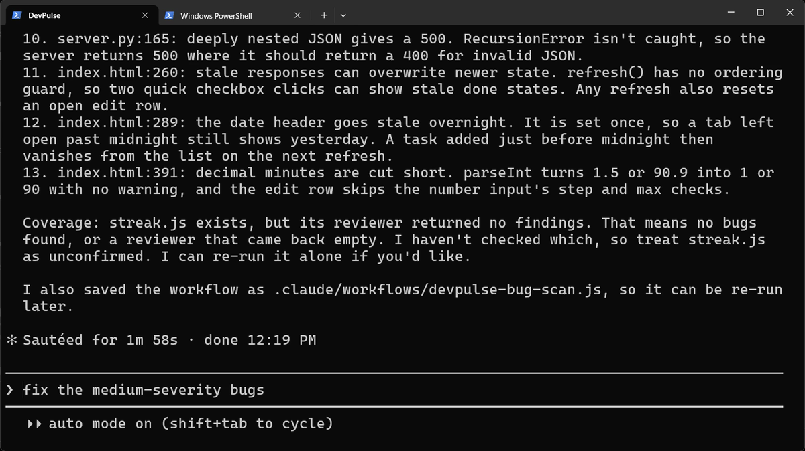

Prefer to watch? This chapter goes with Episode 12 (6:10). Open it on YouTube.
Four files, one at a time
Eleven chapters in, DevPulse has grown. Before you add anything new, you want a bug check. There are four files that matter.
You could ask about each file in turn. That works, but you wait four times. And the four checks do not need each other at all.
Think of a kitchen before a big family dinner. One cook could make the dal, then the rice, then the sabzi, then the raita.
Instead, the head cook gives each dish to its own cook, and they all cook at once. At the end, she puts every dish on one plate. Claude will be our head cook.

How do you run a big job in parallel, and still get one answer back?
Switch workflows on first
A workflow is a small script that Claude writes, which sends several agents off at once and gathers their answers. Each agent is a separate Claude with one task. Check that workflows are on before you ask for one.
Then type workflow to filter the list.


On a Pro plan, your limit is smaller, so keep the size small. Every agent spends tokens from your plan's limit.
Ask for the scan
Start the request with Use a workflow. Name the parts, and say what you want back.

Choose Yes, run it. The workflow runs in the background. Claude says it has four read-only reviewers, one for each file. It will merge their findings when they finish.
Claude's own line points to /workflows. Type it to open the panel that shows the agents at work.

streak.js finished first, after 8 seconds; the whole job was done in 24. x stops one, p pauses it.One list back, and a saved workflow
When the agents finish, press s in the panel to save the workflow. The panel closes, and the chat shows what the whole job cost. Below it, Claude asks where to save it and under what name: keep Project scope and the name devpulse-bug-scan, and press Enter.

s to save it in the project, in .claude/workflows/. Any later session can run the same scan by its name, /devpulse-bug-scan.Back in the chat, Claude merges the four answers into one list, most serious first.

Now read the coverage line. The reviewer of streak.js found nothing, but Claude does not call the file clean. That could mean no bugs, or a reviewer that came back empty. So it marks the file as unconfirmed.
That is a habit worth copying: an empty answer from an agent is a reason to look again.
We asked it not to change any code. Fixing is a separate step, and you choose which bugs.
What a workflow costs
Faster is not cheaper. Four agents each read their own file and think on their own, so the tokens add up. On a Pro plan, that limit is smaller, so keep the size small.
| What we saw | What it means for you |
|---|---|
| 24 seconds | The four checks ran at the same time, not one after another |
| 4 agents | One per file; the small size kept it under five |
| 44.2k tokens | All of it counts toward your plan's limit, for one scan |
When is a workflow worth it?
When a big job splits into parts that don't depend on each other: no part waits for another part's answer. Our four files are like that: each check reads one file and needs nothing from the others.
If the parts do depend on each other (step two needs step one's result), or it is only one file, just ask.
One thing hasn't changed: you still sit and watch the screen, in case Claude needs you. In the next chapter, Claude gets your attention instead, with a beep whenever it needs an answer. Claude Code calls this a hook.
Quick reference
The prompts from this chapter, ready to copy: every prompt, chapter 12.
| Command or key | What it does | Use it when |
|---|---|---|
/config, then type workflow | Shows the workflow settings: on or off, and the size | Before your first workflow, or to make them smaller |
Use a workflow: … | Asks Claude to split the job across several agents | The job splits into parts that do not depend on each other |
/workflows | Shows the running workflow and each agent's tokens | You want to watch, pause or stop a workflow |
x / p in /workflows | Stops or pauses the selected agent | An agent is stuck or costing too much |
s in /workflows | Saves the workflow to .claude/workflows/ | You will want to run the same job again |
Run a scan of your own
The goal: one job split across agents, with the cost written down.
The steps: pick 3 or 4 of your own files, and check the workflow settings in /config first. Ask: Use a workflow: check each of these files … for bugs in parallel, then give me one list. Don't change any code. Watch it in /workflows, and note the time, agents and tokens.
Guess first: will two files cost about the same tokens, or very different amounts?
One question for you: which job in your week could be split into small jobs that don't need each other?
References
Where each command and file on this page comes from. Every screenshot is from our own recording on 29 Oct 2026, Claude Code 2.1.312.
- Anthropic · Claude Code settings Where /config settings live, and project files under .claude/. https://code.claude.com/docs/en/settings
- Anthropic · Manage costs effectively Why many agents mean many tokens, and how to keep an eye on them. https://code.claude.com/docs/en/costs
- My own recording · 29 Oct 2026, Windows 11 The scan finished in 24 s with 4 agents and 44.2k tokens; streak.js came back with no findings, which Claude marked as unconfirmed.
New chapters and episodes come out every week. Follow along on YouTube or the WhatsApp channel. Questions? Ask under the video on YouTube; I read every comment.